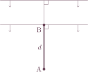
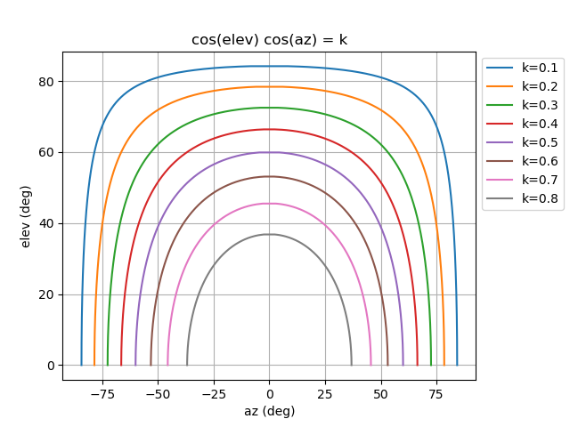

Todd,
The first problem we would like to attack is the case when we have an array of antennas randomly spread out in an area of about 1 to 3 acres. In this case we want to use the array to find the azimuth and elevation of incoming signals in the HF band.
What we need is an algorithm that can quickly construct a correlation table for the expected phase difference between the 3 to 10 different antennas (they are mounted on vehicles, one per vehicle). This table has to be usable from 1 to 30 MHz and for angles up to 85 degrees elevation. All the vehicles have GPS so the relative positions are known to within a couple of feet. The receive equipment can measure the phase difference fast between all the different antennas.
With help of the correlation table the system can then look up the best fit and output the result (which is of course a line of bearing as well as the elevation of the incoming signal). If any vehicle moves, then a new table has to be constructed. So the algorithm must be able to take in new vehicle locations, and continually calculate the new correlation tables.
- Lars
Hi Lars,
It never occurred to me that you could determine the direction, including elevation, of an incoming wave by observing a set of phase relationships among the received signals at several omnidirectional antennas. I've enjoyed thinking about this problem, which is a new one for me.
Here are some notes I took while initially thinking about the problem:
 The wavefront travels distance \(d\) from B to A. If the wavelength is \(\lambda\), then the phase difference between A and B would be \(d/\lambda\) of a full wavelength, or \((d/\lambda)\cdot 360\deg\).
We measure azimuth, \(\alpha\), relative to the A/B axis with A as the origin. We measure elevation, \(\epsilon\), also with origin A, as an angle of lift off the horizontal plane. These local coordinates result in simple expressions.
We assume the wave source is far enough away so that the wavefront can be considered flat, or planar, when it reaches us. So the wavefront is a plane that moves perpendicularly to itself. As a consequence, the az/el heading into the wavefront (perpendicularly) is exactly the same for all our receivers, including A and B.
Top View: \(\epsilon=0\) and azimuth is \(\alpha\). The quantity of interest is \(\ell\), the distance the wavefront must travel between the time it encounters B, until it encounters A. Since \(\cos\alpha=\ell/d\) we have \begin{equation} \ell=d\cdot\cos\alpha \end{equation} And so the phase difference will be \((\ell/\lambda)\cdot 360\deg\).
Side View: now \(\alpha=0\), and we vary the elevation \(\epsilon\). Similar to before, \begin{equation} \ell=d\cdot\cos\epsilon. \end{equation}
Note that the signals are in phase whenever \(\alpha=90\deg\), and also whenever \(\epsilon=90\deg\). That's broadside and straight up, respectively.
Now consider simultaneous azimuth and elevation. What happens? Well, in the first case, the quantity \(\ell\) turns out to be the distance \(d\) projected onto the axis of wave motion. Same holds for the second case. For simultaneous \(\alpha\) and \(\epsilon\), the projection of the distance \(d\) onto the direction of motion is simply \(d\cdot\cos\alpha\cos\epsilon\), and the expression \begin{equation} \boxed{\;\strut \ell = d\cdot\cos\alpha\cos\epsilon\;} \end{equation}
includes all of the previous results as special cases. I believe this \(\ell\) gives us the phase relationship between A and B, by plugging it into \(\theta=(\ell/\lambda)\cdot 360\deg\).
This simple relation allows us to easily determine the expected phase relationship between two antennas, given their positions, the wavelength, and the az/el heading to the incoming wave.
As I understand the problem, the core issue is to compute the expected phase relationship between two antennas, given that a signal comes from a given direction. Then you want to access a table of such data, for several antennas, to find a direction given the measured phase relationships.
I assume that the signal is sufficiently far away for the incoming wavefront to be thought of as purely planar, with no significant curvature. The motion of the wavefront would then be perpendicular to that plane. This in turn implies that all the azimuth/elevation headings will be the same, at each of our receivers.
For a given pair of antennas A and B with known positions, let d be the distance between them. Let us express the heading to the wavefront using azimuth and elevation from antenna A. The azimuth will be measured from this axis. The elevation angle from the ground plane. Call these angles \(a\) and \(e\) respectively.
In the notes, I worked out the expression for the quantity \(L\), which is the distance the wavefront must travel between when it encounters one antenna (B say), until it encounters the other antenna (A say). Using these local coordinates, the expression for \(L\) is simply: \begin{equation} L = d \cos(a) \cos(e) \end{equation}
And then the phase angle between A and B is just \begin{equation} (L/\lambda) \cdot 360\deg \end{equation}
where lambda is the wavelength of the incoming signal. (Omitting sign considerations.)
So it would be a simple matter to compute the table that you seek, as I understand it. You can just take the position data and desired heading, convert to the above-sketched local coordinates, do the simple calculation, and fill up your table.
Of course I might have muffed the calculation. If so, tell me! (I don't mind having my early mistakes caught so that I don't go too far with bad results.)
Instead of using these tables and then looking for a good fit to solve the problem, it would be better if we could just take the phase measurements, wavelenth, and position data, and then just compute the heading to the wavefront. It might turn out to be feasible, and I have just begun to think about this.
When you do the problem in that order, I think you have to come to terms with some issues that you get to ignore with the table approach. One such issue is that these randomly placed antennas will often be more than a wavelength away from each other. But you know where they are, so that should be okay.
In general, I think what you'll end up with, at the core, is a set of equations that look something like, for example \begin{aligned} \cos(a) \cos(b) &= 0.345 \\ \cos(a) \cos(b) &= 0.567 \end{aligned}
where the two equations are using different local coordinates. So you need to unify them, and then determine an \(a\) and \(b\) that make both true. Unless you're unlucky, there will be only one solution, and that is your azimuth and elevation. That would be your answer. (In these equations, the phase phase angle measurment and distance at one pair goes into the 0.345, and a different pair goes into the 0.567.)
This is just a sketch, and I need to think about it more. But it might be quite feasible to do it that way, and if we can, that would be good, wouldn't it?
So that's where I am. Any feedback would be appreciated.
Todd
Hi Lars,
I worked out how to find an exact unique solution for (az, el) in a large variety of cases, based on phase measurements between antennas.
Recall from the previous email that a central relationship is \begin{equation} L = d \cos(a) \cos(e), \end{equation}
where \(d\) is the distance between the antennas, \(a\) is azimuth, and \(e\) is elevation. \(L\) is the distance the wavefront travels between the time it encounters the two antennas. The expected phase measurement is then \begin{equation} \theta = (L / \lambda) \cdot 360\deg, \end{equation}
where \(\lambda\) is the wavelength of the signal of interest.
Now, if \(d\) is not too large, you can reverse the computation and compute \(L\) based on the phase measurement. I assume that you can measure phase accurately, but only between -180 and 180. You can measure \(d\) accurately, and \(\theta\) accurately. But you really cannot tell if one wave is, say, 1050 degrees ahead of another. The reading would say -30 degrees.
So for now, let us assume that \(d\) is not too large, and in particular that it is not more than half a wavelength of interest. Then we can easily determine \(L\) from a pure phase measurement. The quantity \(L\) is really what's of interest.
So given \begin{equation} L = d \cos(a) \cos(e), \end{equation}
we get \begin{equation} \cos(a) \cos(e) = (L/d) =: k. \end{equation}
I think of \(k\) as the "shrinkage factor". It is a number between zero and one that indicates how much shorter than the \(d\) distance the wave actually traveled.
The above equation expresses the relationship between azimuth and elevation that must hold in order to be consistent with the phase measurement that was made.
Here's an example. The distance between the antennas, \(d\), is 10 meters, and the measured phase angle between the signals at those antennas is 60 degrees, and the frequency is 10 MHz, or 30 meters.
Since \(d\) is less than a half wavelength, we easily solve \begin{equation} 60 = (L / 30) \cdot 360, \end{equation}
getting \(L = 5\) meters. In turn, the ratio \(L/d\) is \(5/10\), or \(0.5\). So the set of feasible azimuth elevation pairs is given by \begin{equation} \cos(a) \cos(e) = 1/2. \end{equation} Here is a plot of the set of feasible pairs:
That general shape is always what such a solution set looks like. Here is a set of feasibilities for various shrinkage factors between 0 and 1:

Now suppose we make another phase measurement between a different pair of antennas, also not too far away. Really, the only other requirement is that the new axis not be parallel to the original antenna axis. One antenna can even be shared between the two pairs.
We come up with an additional equation for the new antenna, and the azimuth/elevation pairs are now constrained to be \begin{equation} \cos(a) \cos(e) = k_2 \end{equation}
where \(k_2\) is a potentially different shrinkage factor. It is important to note, however, that \(a\) and \(e\) are in coordinates local to the new axis. We want to express these azimuth/elevation pairs in the same coordinate system as the first ones, and this is easy to do. Recall that the actual direction to the wavefront is the same as measured from any antenna, because the source is far away. Everybody reads the actual same elevation; it's only their azimuths that are different in the local coordinate systems. So all we have to do to convert one coordinate system to another is to adjust the angle of the azimuths by the angle between the antenna pairs. Or alternately, we can convert each to global az/el by adjusting each az according to the axis deviation from north.
So what happens is that we end up with two equations like this: \begin{aligned} \cos(a) \cos(e) = k_1 \\ \cos(a+\phi) \cos(e) = k_2 \end{aligned} where \(\phi\) is a constant we know, and \(k_1\) and \(k_2\) are each shrinkage factors. Each of those is a curve like we saw above (the second one is shifted on the \(a\)-axis), and it fairly clearly intersects at a point (or all the points). It cannot intersect at two points, for example. So that point is the only az/el pair that is consistent with our phase measurements, and is the answer.
For example, suppose we have \begin{equation} \cos(a) \cos(e) = 0.70 \\ \cos(a - 30) \cos(e) = 0.53 \end{equation}
Here they are plotted together:
We see graphically that they intersect at one point.
It is easy and efficient to actually compute that intersection point. All you do is expand \(\cos(a+\phi)\) out according to the well-known relation \begin{equation} \cos(a+\phi) = \cos(a)\cos(\phi) - \sin(a)\sin(\phi) \end{equation}
noting that \(\cos(\phi)\) and \(\sin(\phi)\) are constants. When you simplify appropriately, you get \begin{equation} \tan(a) = {\cos(\phi) - k_2/k_1 \over \sin(\phi)} \end{equation} So an appropriate \(\arctan\) of that is \(a\). Given \(a\), it is easy to get \(e\): \begin{equation} \cos(e) = k_1 / \cos(a) \end{equation} so \(e\) is an appropriate \(\arccos\) of that. (It turns out that the "principle value" of \(\arctan\) and \(\arccos\) are the ones you want).
These are really efficient calculations. Just a few mults and divides, a few cosines, an arccos, and an arctan. Even slow hardware should be able to do many thousands of these per second.
So consider, the following simplified algorithm could work much of the time. You have a field full of antennas, and a signal of interest. Pick a pair of antennas that are within a half wavelength, and measure the phase. Then pick another pair, and measure that phase. (Or just a third antenna not in line and also not too far away). Do the simple calculation, and get the answer.
Interestingly, you can then use all your other antennas, even ones that are "too far" from each other, to reinforce the answer you got. You just compute the expected phase between an arbitrary pair of antennas, and verify that's what you measured.
But notice that the core result needs only three, or maybe four antennas.
If you cannot find appropriately placed antennas (for the frequency of interest), that means that either they are all too far from each other, or they are all lined up in a row. If they are all in a line, you lose—move them!
If the problem is, say, that you're trying to measure for 30 MHz or 10 meters, and you don't have any antennas within 5 meters of each other (or only one such pair), then the problem is a little more involved. But would this happen in practice?
If it does, I have ideas on how to proceed. It would be pretty much like the above, but the difference would relate to the \(\theta\)-to-\(L\) calculation. You don't get a unique value for \(L\), but you get several possible values, the exact number of which depends on \(\lambda\) and \(d\).
I think it's just a matter of looking at a fairly small number of discrete cases and figuring out what is going on. There might also be resolution issues that are harder in this case.
So given my assumptions and understanding of the problem, I think this line is potentially winning. Please let me know what you think.
Todd